分享如何透過 TFS 建立 Private npm regisry 並將程式碼封裝後發佈給其他應用程式使用
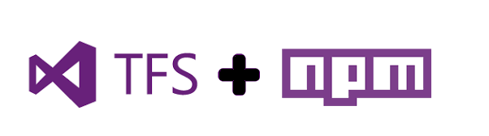
在先前分享過Publishing Your JavaScript File as NPM Packages，介紹如何自行建立透過 npm 建立自己的 js 類別庫，解除開發與部屬的相依性。而今天就要透過TFS2017的 private npm regisry 功能來管理自行開發的 js library.
要稍微注意一下，本次分享的 npm 套件管理功能需要使用 最新版的 Visual Studio Team Services 或是 TFS 2017 Update 1 以上版本才有支援該功能.
Create TFS environment for Feed
當我們安裝好 TFS 後，可以看一下Package Management 套件是否有安裝好並啟用(如果是安裝TFS2017 update 1之後版本的朋友預設是裝好這個套件的)：
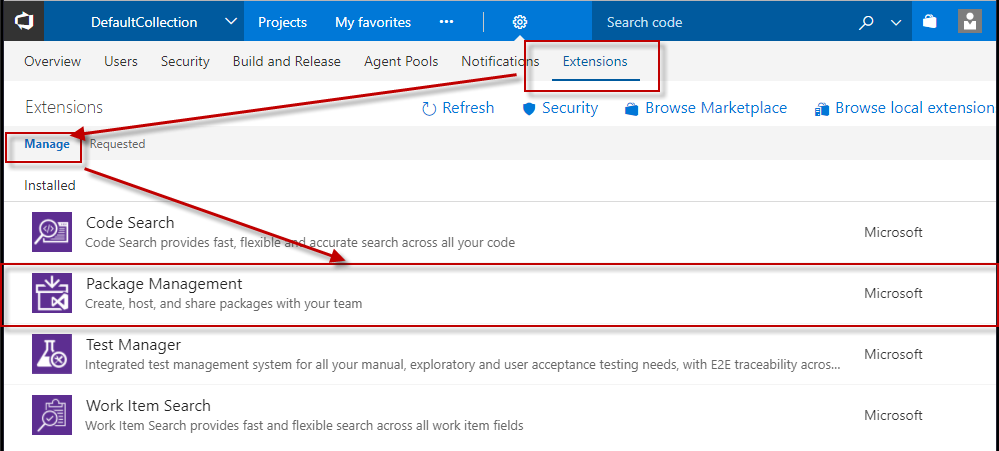
如果完成的話可以在該專案的 建置與發佈(Build & Release) 內看到 套件管理(Packages) 的項目：
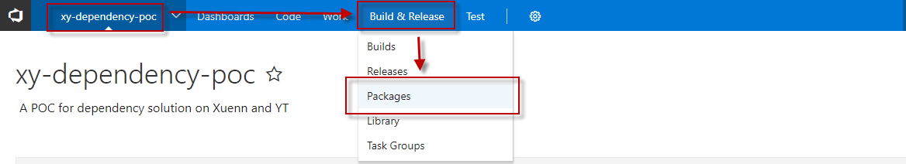
看的到下面圖示(請忽略圖中以上傳的套件)即完成 TFS 設定:
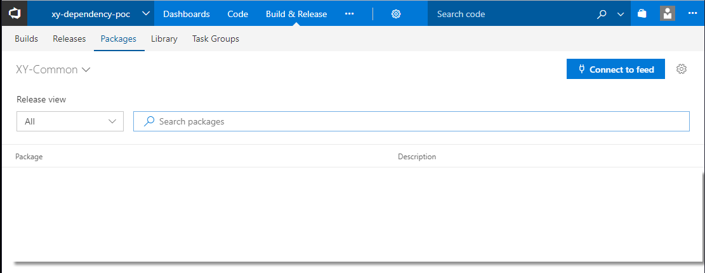
Setup .npmrc
當我們建立起 TFS 環境後只要透過幾個設定將 .npmrc 的檔案進行調整就好。在開始前先稍微介紹一下 .npmrc 的作用。
What is .npmrc
官方的說明npmrc就是專門為了 npm 環境所建立的設定檔案，有以下幾種類型與對應位置：
- per-project config file (/path/to/my/project/.npmrc)
- per-user config file (~/.npmrc)
- global config file ($PREFIX/etc/npmrc)
- npm builtin config file (/path/to/npm/npmrc)
下面範例我們會用第一種 - 專案內資料夾的方式來建立 .npmrc 檔案並展示如何使用
Update TFS registry information to .npmrc
我們可以打開 Connect to Feed 看到當前的連線資訊：
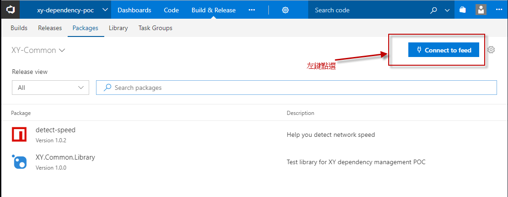
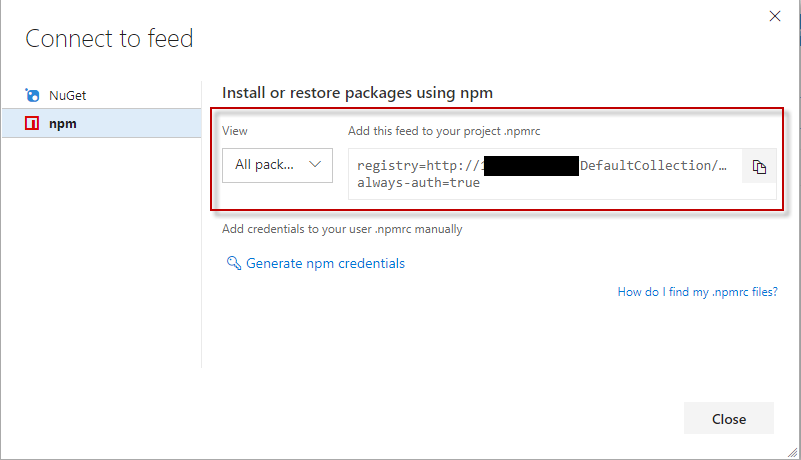
如果我們這邊只設定 registry 位置後就想上傳當前 js library 會遇到以下認證問題：
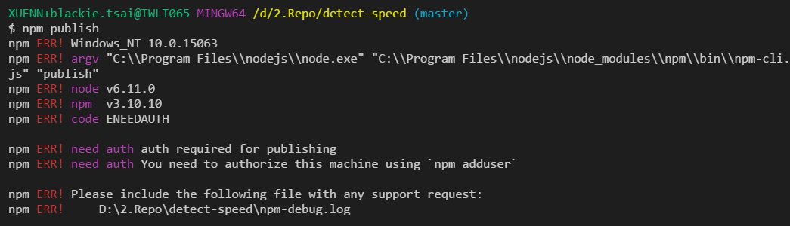
簡單來講我們就是要將該 TFS 的認證登入資訊放進當前的 .npmrc 內作使用才可以上傳。
Add TFS credentials to .npmrc
認證登入資訊在我們先前取得的 private registry 資訊下方：
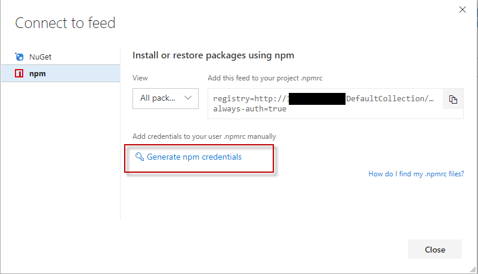
當我們按下產生(generate)後即會產生該組帳號的認證資訊：
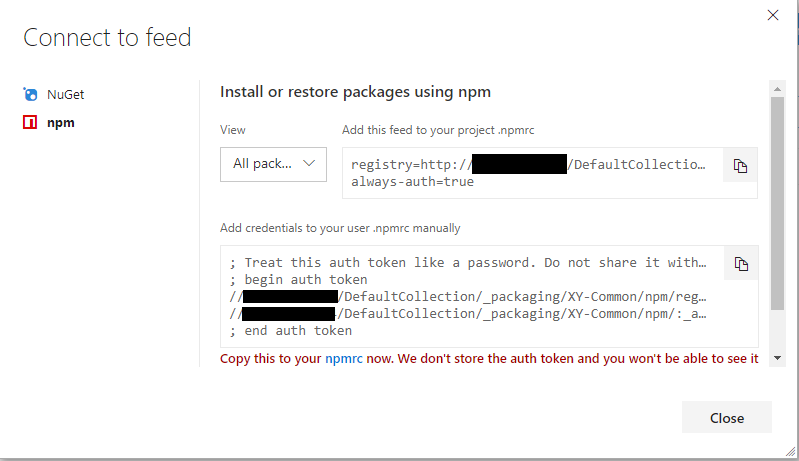
而我們只要將該組完封不動的貼到 .npmrc 檔案內就可以。
1 | registry=http://tfs.domain/DefaultCollection/_packaging/XY-Common/npm/registry/ |
Publish to private registry
目前整個資料夾內組成與檔案結構如下：
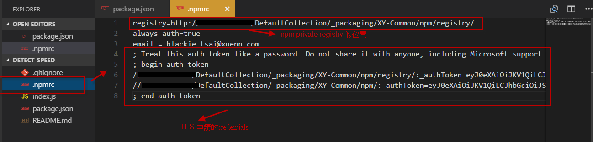
當上面設定都操作完畢，就可以參考先前Publishing Your JavaScript File as NPM Packages的方式建立起自己的 package 後上傳至 private registry。
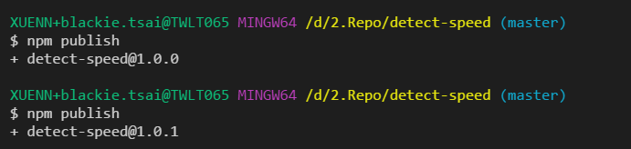
稍微注意一下，不管是用官方或是自行架設的 registry 都要在上傳前更新版本號，避免以下錯誤。
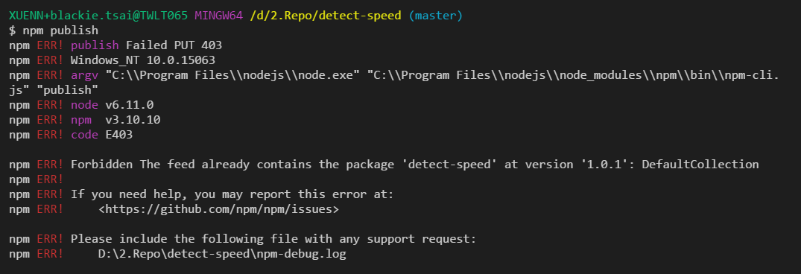